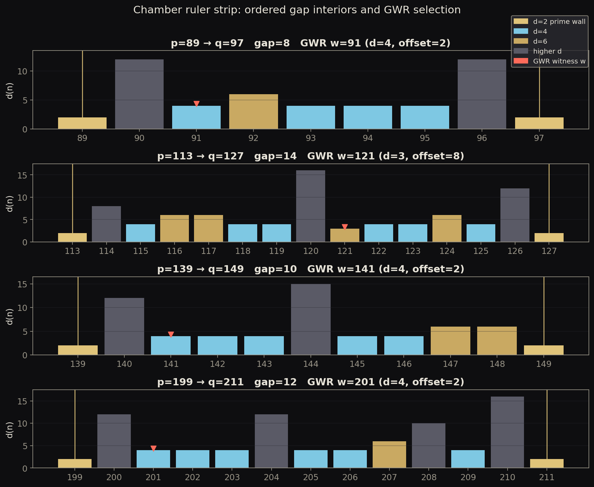

mixed
Chamber ruler strip
Pedagogical illustration of the ordered gap chamber and GWR leftmost min-d selection on toy exemplars. Universal theorems remain in PROOF.md; this figure is not a finite proof surface.

- Regime
- toy exemplar gaps from fixtures/exemplars/gaps.json (local teaching only)
- Claim language
- weak
- Reproduce
visualizations/library/.venv/bin/python visualizations/library/entries/chamber-ruler-strip/demo.py- Chapter refs
PROOF.mdresearch/02-gwr-dni/docs/RESULTS.md
- Tags
Observable object
Between two consecutive primes p and q sits an ordered hallway of composite integers. Each integer carries a divisor count d(n). The plot draws that hallway as a bar strip.
Mechanism
Scan the open interval (p, q) from the left. Keep the leftmost integer whose divisor count is minimal among interior points. That integer is the GWR-selected witness w. The next prime is the first later integer with d(n)=2 after the chamber structure is read under the proved selection laws.
Project terms
- Chamber: the gap interval with endpoint primes as walls.
- GWR: Leftmost Minimum-Divisor Rule (prime-gap maximizer theorem).
- Witness offset:
w - p, bounded under universal bounded compression inPROOF.md.
Formal link
PROOF.md: direct deterministic next-prime theorem; GWR / leftmost minimum-divisor maximizer theorem.
Status and limits
- Status chip: mixed (toy illustration of proved chamber/GWR objects; theorems live in
PROOF.md). - Regime: toy exemplar gaps only. Not a measurement campaign. Not a
10^18surface. - Do not read bar heights as probabilities.